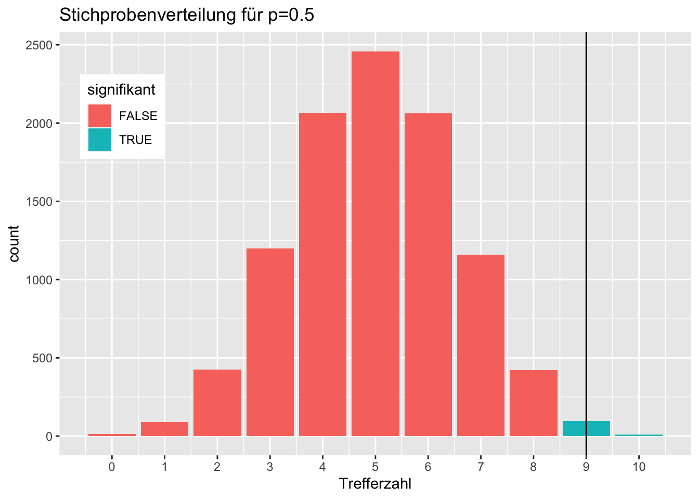
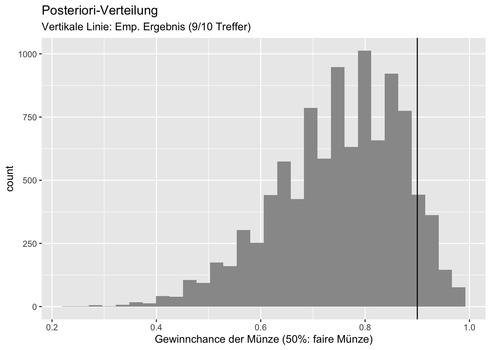
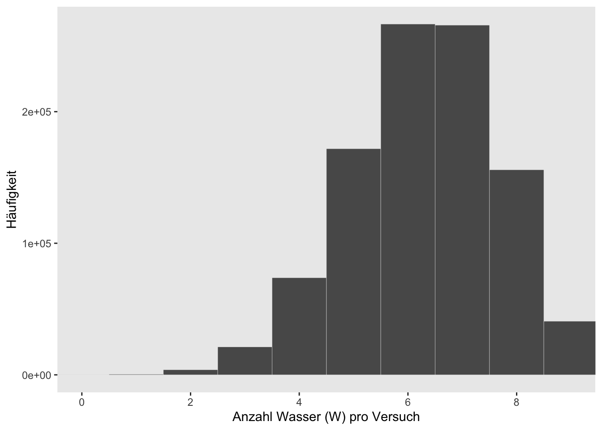
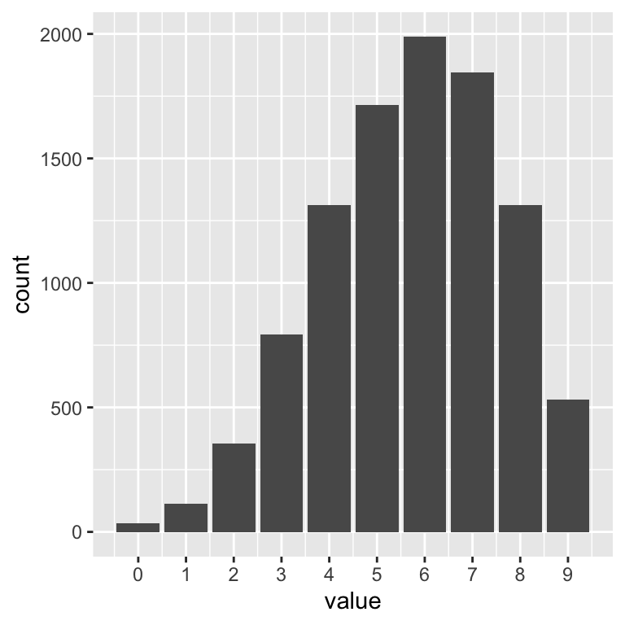
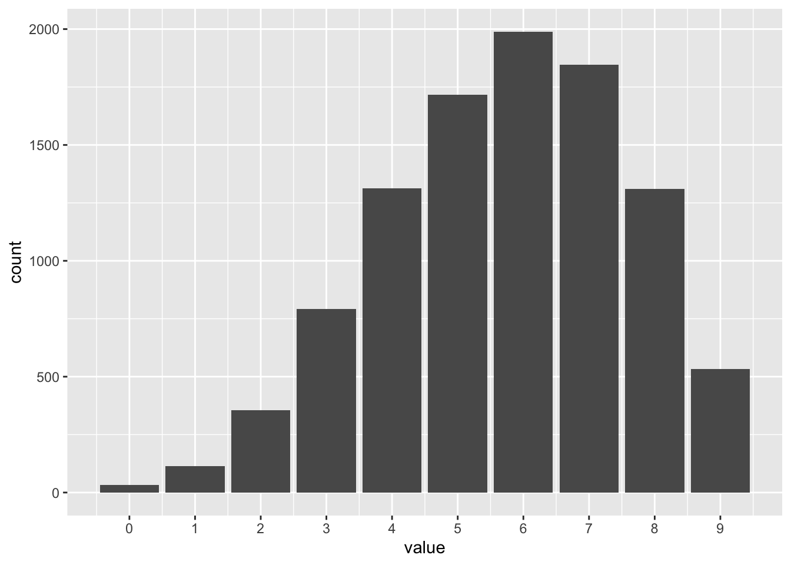

n <- 10
n_success <- 6
n_trials <- 9
d <-
tibble(p_grid = seq(from = 0, to = 1, length.out = n),
prior = 1) %>%
mutate(likelihood = dbinom(n_success,
size = n_trials,
prob = p_grid)) %>%
mutate(unstand_post = (likelihood * prior),
post = unstand_post / sum(unstand_post))6 Die Post befragen

6.1 Mit Stichproben die Post-Verteilung zusammenfassen
6.1.1 Zur Erinnerung: Gitterwerte in R berechnen
Voilà, die Post-Verteilung als Tabelle:
| p_grid | prior | likelihood | unstand_post | post |
|---|---|---|---|---|
| 0.00 | 1 | 0.00 | 0.00 | 0.00 |
| 0.11 | 1 | 0.00 | 0.00 | 0.00 |
| 0.22 | 1 | 0.00 | 0.00 | 0.01 |
| 0.33 | 1 | 0.03 | 0.03 | 0.04 |
| 0.44 | 1 | 0.11 | 0.11 | 0.12 |
| 0.56 | 1 | 0.22 | 0.22 | 0.24 |
| 0.67 | 1 | 0.27 | 0.27 | 0.30 |
| 0.78 | 1 | 0.20 | 0.20 | 0.23 |
| 0.89 | 1 | 0.06 | 0.06 | 0.06 |
| 1.00 | 1 | 0.00 | 0.00 | 0.00 |
6.1.2 Zur Erinnerung, die Gittermethode
Die Gittermethode ist ein Weg, die Posteriori-Verteilung zu berechnen. Die Posteriori-Verteilung birgt viele nützliche Informationen.
Modell: \(W=6\) Wasser, \(N=9\) Würfen und \(k=10\) Gitterwerten.
Abb. Figure 6.1 zeigt die resultierende Post-Verteilung.

| Tabelle d mit Daten zur Posteriori-Verteilung | ||||
| p_grid | prior | likelihood | unstand_post | post |
|---|---|---|---|---|
| 0 | 1 | 0 | 0 | 0 |
| 1 × 10−1 | 1 | 1 × 10−4 | 1 × 10−4 | 1 × 10−4 |
| 2 × 10−1 | 1 | 5 × 10−3 | 5 × 10−3 | 5 × 10−3 |
| 3 × 10−1 | 1 | 3 × 10−2 | 3 × 10−2 | 4 × 10−2 |
| 4 × 10−1 | 1 | 1 × 10−1 | 1 × 10−1 | 1 × 10−1 |
| 6 × 10−1 | 1 | 2 × 10−1 | 2 × 10−1 | 2 × 10−1 |
6.1.3 Beispiele für Fragen an die Post-Verteilung
- Mit welcher Wahrscheinlichkeit liegt der Parameter unter einem bestimmten Wert?
- Mit welcher Wahrscheinlichkeit liegt der Parameter zwischen zwei bestimmten Werten?
- Mit 5% Wahrscheinlichkeit liegt der Parameterwert nicht unter welchem Wert?
- Welcher Parameterwert hat die höchste Wahrscheinlichkeit?
- Wie ungewiss ist das Modell über die Parameterwerte?
Solche Fragen kann man in zwei Gruppen aufteilen:
- Fragen zu Parametern
- Fragen zu Wahrscheinlichkeiten
6.1.4 Wir arbeiten jetzt mit Häufigkeit, nicht mit Wahrscheinlichkeit
Komplexere Bayes-Modelle können nicht mehr “einfach mal eben” ausgerechnet werden; die Integrale, auf die man dabei stößt, treiben einem gestandenen Mathematiker die Schweißperlen auf die Stirn.
Glücklicherweiße gibt es einen Trick, der die Sache nicht nur rechnerisch, sondern auch konzeptionell viel einfacher macht.
Dieser Trick lautet: Wir arbeiten nicht mehr mit Wahrscheinlichkeiten, sondern mit Häufigkeiten.
Praktischerweise werden wir in Kürze einen R-Golem kennenlernen, der uns das meiste an Arbeit abnimmt. Dieser Golem liefert uns Stichproben aus der Post-Verteilung zurück.
Lernen wir jetz also, wie man mit solchen Stichproben umgeht.
Important
Die Post-Verteilung in Stichprobenform ist viel einfach zu handbaben als das direkte Arbeiten mit Wahrscheinlichkeiten. Daher sind viele R-Funktionen für Bayes auf Stichproben eingestellt.
Die Grid-Methode ist bei größeren Datensätzen (oder größeren Modellen) zu rechenintensiv. In der Praxis werden daher andere, schnellere Verfahren verwendet, sog. Monte-Carlo-Markov-Ketten (MCMC). Diese Verfahren sind aber nicht mehr Gegenstand dieses Kurses.
6.1.5 Häufigkeiten sind einfacher als Wahrscheinlichkeiten
Wie gesagt, typische R-Werkzeuge (“R-Golems”) liefern uns die Post-Verteilung in Stichprobenform zurück.
Bevor wir uns aber mit diesen R-Werkzeugen beschäftigen, sollten wir uns vertraut machen mit einer Post-Verteilung in Stichprobenform.
Ersstellen wir uns also einen Tabelle mit Stichprobendaten aus der Posteriori-Verteilung (Tabelle d):
samples <-
d %>% # nimmt die Tabelle mit Posteriori-Daten,
slice_sample( # Ziehe daraus eine Stichprobe,
n = 1e4, # mit insgesamt n=10000 Elementen,
weight_by = post, # Gewichte nach Spalte mit Post-Wskt.,
replace = T) # Ziehe mit ZurücklegenDie Wahrscheinlichkeit, einen Parameterwert aus Tabelle d zu ziehen, ist proportional zur Posteriori-Wahrscheinlichkeit (post) dieses Werts. Ziehen mit Zurücklegen hält die Wahrscheinlichkeiten während des Ziehens konstant.
| Stichprobendaten aus der Post-Verteilung | ||||
| Nur die ersten Zeilen abgebildet | ||||
| p_grid | prior | likelihood | unstand_post | post |
|---|---|---|---|---|
| 0.889 | 1 | 0.057 | 6 × 10−2 | 0.063 |
| 0.778 | 1 | 0.204 | 2 × 10−1 | 0.227 |
| 0.778 | 1 | 0.204 | 2 × 10−1 | 0.227 |
Wenn Sie jetzt denken: “Warum machen wir das jetzt? Brauchen wir doch gar nicht!” - Dann haben Sie Recht. Künftig werden wir aber, wenn wir mit komplexeren Modellen zu tun haben, nur noch mit Post-Verteilungen auf Stichprobenbasis arbeiten.
Wie sieht diese Tabelle dann als Histogramm1 aus?
Hier erstmal die ersten 100 gesampelten Gitterwerte (p_grid):
[1] 0.89 0.78 0.78 0.56 0.56 0.44 0.78 0.56 0.78 0.56 0.78 0.78 0.78 0.78 0.89
[16] 0.67 0.78 0.56 0.67 0.56 0.44 0.56 0.67 0.56 0.78 0.44 0.44 0.67 0.67 0.67
[31] 0.78 0.33 0.56 0.78 0.56 0.78 0.78 0.67 0.67 0.78 0.67 0.56 0.44 0.56 0.78
[46] 0.67 0.22 0.67 0.56 0.67 0.67 0.78 0.67 0.67 0.11 0.56 0.89 0.67 0.67 0.56
[61] 0.78 0.67 0.78 0.78 0.89 0.44 0.67 0.33 0.67 0.44 0.44 0.67 0.56 0.56 0.78
[76] 0.78 0.67 0.89 0.56 0.78 0.78 0.56 0.67 0.67 0.56 0.67 0.44 0.33 0.67 0.56
[91] 0.56 0.78 0.67 0.89 0.56 0.56 0.56 0.67 0.67 0.44So sieht die Post-Verteilung auf Basis von Stichproben dann aus, s. Abb. Figure 6.2.

6.1.6 Visualisierung der Stichprobendaten mit \(k=100\) Gitterwerten
\(k=10\) Gitterwerte ist ein grobes Raster. Drehen wir mal die Auflösung auf \(k=100\) nach oeben.
Datensatz samples, \(n=10^3\), \(k=100\) Gitterwerte, basierend auf dem Modell oben.
samples_k100 <-
d_k100 %>% # nimmt die Tabelle mit Posteriori-Daten,
slice_sample( # Ziehe daraus eine Stichprobe,
n = n, # mit insgesamt n=1000 Elementen,
weight_by = post, # Gewichte nach Spalte mit Post-Wskt.,
replace = T) # Ziehe mit Zurücklegen
Die Stichprobendaten nähern sich der “echten” Posteriori-Verteilung an: Die Stichproben-Post-Verteilung hat jetzt “glattere” Ränder.
Note
Mehr Stichproben und mehr Gitterwerte glätten die Verteilung.
Jetzt noch mal mit mehr Stichproben: \(n=10^6\) Stichproben bei \(k=100\) Gitterwerten aus der Posteriori-Verteilung.
d_k100 %>%
slice_sample(n = 1e6, weight_by = post, replace = T) %>%
ggplot(aes(x = p_grid)) +
geom_density(fill = "black") +
scale_x_continuous("Anteil Wasser (p)", limits = c(0, 1)) +
labs(y = "")
6.2 Die Post-Verteilung befragen
So, jetzt befragen wir die Post-Verteilung.
Important
Die Post-Verteilung ist das zentrale Ergebnis einer Bayes-Analyse. Wir können viele nützliche Fragen an sie stellen.
Es gibt zwei Arten von Fragen:
- nach Wahrscheinlichkeit (p)
- nach Parameterwerten (Quantilen, q)
Der Unterschied zwischen beiden Arten von Fragen ist in Abb. Figure 6.3 illustriert.

6.2.1 Fragen zu Wahrscheinlichkeiten
Sagen wir, dass sei unsere Forschungsfrage: Wie groß ist die Wahrscheinlichkeit, dass der Wasseranteil unter 50% liegt?
Wir filtern einfach die passenden Stichproben und und summieren die Wahrscheinlichkeiten dieser Stichproben:
Wir zählen (count) einfach die Stichproben, die sich für einen Wasseranteil (p_grid) von weniger als 50% aussprechen:
samples %>%
count(p_grid < .5) # A tibble: 2 × 2
`p_grid < 0.5` n
<lgl> <int>
1 FALSE 8250
2 TRUE 1750Da wir insgesamt 10000 (1e4) Stichproben gezogen haben, können wir noch durch diese Zahl teilen, um einen Anteil zu bekommen. Dieser Anteil ist die Antwort auf die Forschungsfrage: Wie Wahrscheinlichkeit (laut Modell) für einen Wasseranteil kleiner als 50%.
Einfach wie 🍰 essen.
Noch eine Forschungsfrage: Mit welcher Wahrscheinlichkeit liegt der Parameter zwischen 0.5 und 0.75?
samples %>%
count(p_grid > .5 & p_grid < .75)# A tibble: 2 × 2
`p_grid > 0.5 & p_grid < 0.75` n
<lgl> <int>
1 FALSE 4610
2 TRUE 5390samples %>%
count(p_grid > .5 & p_grid < .75) %>%
summarise(Anteil = n / 1e4,
Prozent = 100 * n / 1e4) # In Prozent# A tibble: 2 × 2
Anteil Prozent
<dbl> <dbl>
1 0.461 46.1
2 0.539 53.9Anteile von count() könnte man, wenn man möchte, auch filter() verwenden:
samples %>%
filter(p_grid > .5 & p_grid < .75) %>%
summarise(sum = n() / 1e4,
anteil = 100 * n() / 1e4) # In Prozent# A tibble: 1 × 2
sum anteil
<dbl> <dbl>
1 0.539 53.9Noch ein Beispiel für eine Forschungsfrage: Mit welcher Wahrscheinlichkeit liegt der Parameter zwischen 0.9 und 1?
samples %>%
count(p_grid >= .9 & p_grid <= 1) %>%
summarise(prop = 100 * n() / 1e4) # prop wie "proportion", Anteil# A tibble: 1 × 1
prop
<dbl>
1 0.01Laut unserem Modell ist es also sehr unwahrscheinlich, dass der Wasseranteil der Erde mind. 90% beträgt.
6.2.2 Fragen nach Parameterwerten
Important
Schätzbereiche von Parameterwerten nennt man auch Konfidenz- oder Vertrauensintervall (synonym: Kompatibilitätsintervall oder Passungsbereich).
Welcher Parameterwert wird mit 90% Wahrscheinlichkeit nicht überschritten, laut unserem Modell? (Gesucht sind also die unteren 90% Posteriori-Wahrscheinlichkeit)
samples %>%
summarise(quantil90 = quantile(p_grid, p = .9))# A tibble: 1 × 1
quantil90
<dbl>
1 0.778Laut unserem Modell können wir zu 90% sicher sein, dass der Wasseranteil kleiner ist als ca. 78%.
Es hilft vielleicht, sich die Post-Verteilung noch einmal vor Augen zu führen:
samples %>%
ggplot(aes(x = p_grid)) +
geom_bar()
Was ist das mittlere Intervall, das mit 90% Wahrscheinlichkeit den Parameterwert enthält, laut dem Modell?
Dafür “schneiden” wir links und rechts die 5% der Stichproben mit den extremsten Werten ab und schauen, bei welchem Parameterwert wir landen:
samples %>%
summarise(
quant_10 = quantile(p_grid, 0.05),
quant_90 = quantile(p_grid, 0.95))# A tibble: 1 × 2
quant_10 quant_90
<dbl> <dbl>
1 0.444 0.889Solche Fragen lassen sich mit Hilfe von Quantilen beantworten.
6.2.3 Zur Erinnerung: Quantile
Beispiel: Wie groß sind die Studentis (Quelle des Datensatzes)? Das Quantil von z.B. 25% zeigt die Körpergröße der 25% kleinsten Studentis an, analog für 50%, 75%:
speed_gender_height <- read_csv("https://raw.githubusercontent.com/rpruim/OpenIntro/master/data/speed_gender_height.csv")
height_summary <-
speed_gender_height %>%
drop_na(height) %>%
summarise(q25 = quantile(height, prob = .25),
q50 = quantile(height, prob = .5),
q75 = quantile(height, prob = .75))
height_summary# A tibble: 1 × 3
q25 q50 q75
<dbl> <dbl> <dbl>
1 63 66 69Visualisierung der Quantile:

6.2.4 Den Quantilen unter die Motorhaube geschaut
Den R-Befehl quantile() kann man sich, wenn man will, einfach nachbauen und entmystifizieren.
Angenommen, wir wollen wissen, welcher Wasseranteil mit 90% Wahrscheinlichkeit nicht überschritten wird:
- Sortiere die Stichproben aufsteigend.
- Schneide die oberen 10% ab.
- Schaue, was der größte verbleibende Wert ist.
samples %>%
arrange(p_grid) %>% # sortiere
slice_head(n = 9000) %>% # nur die ersten 90000, also die obersten 1000 abschneiden
summarise(p90 = max(p_grid))# A tibble: 1 × 1
p90
<dbl>
1 0.778Das (annähernd) gleiche Ergebnis liefert quantile():
samples %>%
summarise(q90 = quantile(p_grid, .9))# A tibble: 1 × 1
q90
<dbl>
1 0.7786.2.5 Visualisierung der Intervalle
Intervalle (Bereiche), die die Wahrscheinlichkeitsmasse hälftig auf die beiden Ränder aufteilen, nennen wir Perzentilintervalle oder Equal-Tails-Intervalle (ETI):

6.3 Schiefe Posteriori-Verteilungen sind möglich
Gehen wir von 3 Würfen mit 3 Treffern aus; auf welche Wasseranteile (Parameterwerte) werden wir jetzt schließen?
Vermutlich ziemlich hohe.
Erstellen wir uns dazu mal eine Post-Verteilung (3 Treffer, 3 Würfe):
d_33 <-
tibble(p_grid = seq(0,1, by =.01),
prior = 1) %>%
mutate(likelihood = dbinom(3, size = 3, prob = p_grid)) %>%
mutate(unstand_post = likelihood * prior) %>%
mutate(post_33 = unstand_post / sum(unstand_post))
samples_33 <-
d_33 %>%
slice_sample(n = 1e4,
weight_by = post_33,
replace = T)So sehen die ersten paar Zeilen der Post-Verteilung, samples_33, aus.
| p_grid | prior | likelihood | unstand_post |
|---|---|---|---|
| 0.99 | 1 | 0.97 | 0.97 |
| 0.77 | 1 | 0.46 | 0.46 |
| 0.95 | 1 | 0.86 | 0.86 |
| 0.59 | 1 | 0.21 | 0.21 |
| 0.81 | 1 | 0.53 | 0.53 |
| 0.99 | 1 | 0.97 | 0.97 |
Mit dieser “schiefen” Post-Verteilung können wir gut die Auswirkungen auf das Perzentil- und das Höchste-Dichte-Intervall anschauen.
6.3.1 50%-Perzentil-Intervall
Hier z.B. ein 50%-Perzentilintervall (PI, auch Equal-Tails-Intervall, ETI, genannt):
qi_50_low <- eti(samples_33$p_grid, ci = .5)$CI_low
qi_50_up <- eti(samples_33$p_grid, ci = .5)$CI_high
p1 <-
d_33 %>%
ggplot(aes(x = p_grid, y = post_33)) +
# check out our sweet `qi()` indexing
geom_area(data = . %>%
filter(p_grid > qi_50_low &
p_grid < qi_50_up),
fill = "grey75") +
geom_line() +
scale_x_continuous(breaks = seq(from = 0, to = 1, by = .1))
p1
Die Grenzwerte dieses ETI (oder jedes beliebig breiten) kann man sich z.B. so ausgeben lassen:
library(easystats)
samples_33 %>%
select(p_grid) %>%
eti(ci = .5)Equal-Tailed Interval
Parameter | 50% ETI
------------------------
p_grid | [0.71, 0.94]Der wahrscheinlichste Parameterwert (1) ist nicht im Intervall enthalten. Das ist ein Nachteil der ETI.
6.3.2 50%-Intervall höchster Dichte
Intervalle höchster Dichte (Highest density Intervals) sind definiert als die schmälsten Intervalle, die den gesuchten Parameter enthalten.

Der wahrscheinlichste Paramterwert (1) ist im Intervall enthalten, was Sinn macht.
So kann man sich die Grenzwerte eines 50%-HDI ausgeben lassen:
samples %>%
select(p_grid) %>%
bayestestR::hdi(ci = .5) # aus dem Paket `bayestestR`Warning: Identical densities found along different segments of the distribution,
choosing rightmost.Highest Density Interval
Parameter | 50% HDI
------------------------
p_grid | [0.67, 0.78]Das Modell ist sich also zu 50% sicher, dass der gesuchte Parameter (der Wasseranteil der Erdoberfläche) sich in diesem Bereich befindet (auf Basis eines HDI).
Note
Das R-Paket {bayestestR} ist Teil des Meta-Pakets {easystats}. Es reicht, wenn Sie easystats laden, damit wird bayestestR automatisch geladen.
6.4 Intervalle höchster Dichte vs. Perzentilintervalle
- Bei symmetrischer Posteriori-Verteilung sind beide Intervalle ähnlich
- Perzentilintervalle sind verbreiteter
- Intervalle höchster Dichte (Highest Density Interval, HDI) sind bei schiefen Post-Verteilungen zu bevorzugen
- Intervalle höchster Dichte sind die schmalsten Intervalle für eine gegebene Wahrscheinlichkeitsmasse
6.5 Punktschätzungen
Datendatz samples, 6 Treffer bei 9 Würfen.
6.5.1 Lageparameter
Z.B. Welchen mittleren Wasseranteil muss man annehmen?
samples %>%
summarise(
mean = mean(p_grid),
median = median(p_grid)) # A tibble: 1 × 2
mean median
<dbl> <dbl>
1 0.634 0.6676.5.2 Streuungsparameter
Z.B. “Wie unsicher sind wir in der Schätzung des Wasseranteils?”
samples %>%
summarise(
p_sd = sd(p_grid),
p_iqr = IQR(p_grid),
p_mad = mad(p_grid)) # A tibble: 1 × 3
p_sd p_iqr p_mad
<dbl> <dbl> <dbl>
1 0.140 0.222 0.165Anstelle der Streuungsparameter ist es aber üblicher, ein HDI oder PI anzugeben.
6.6 Visualisierungen der Punktschätzer

Je symmetrischer die Verteilung, desto näher liegen die Punktschätzer aneinander (und umgekehrt).
6.7 Der zwielichte Dozent: Stichproben-Vert. vs. Post-Vert.
Daten: 9 von 10 Treffern beim Münzwurf. Ist die Münze fair?
tibble(
Trefferzahl = rbinom(n = 1e4, size = 10, prob = 1/2)
) %>%
mutate(signifikant = ifelse(Trefferzahl %in% c(9,10), TRUE, FALSE)) %>%
ggplot() +
aes(x = Trefferzahl, fill = signifikant) +
geom_bar() +
scale_x_continuous(breaks = 0:10) +
theme(legend.position = c(0.1, 0.8)) +
geom_vline(xintercept = 9) +
labs(title = "Stichprobenverteilung für p=0.5")
Die Stichprobenverteilung zeigt, wie Wahrscheinlich der empirischen Daten \(D\) (z.B. 9 von 10 Treffer) ist gegeben eines Parameterwerts \(p\) (z.B. \(p=0.5\)): \(Pr(D|p)\).

Die Posteriori-Verteilung gibt die Wahrscheinlichkeit jedes Parameterwerts \(p\) wider, gegeben der empirischen Daten \(D\): \(Pr(p|D)\).
Die meisten Forschungsfragen lassen sich mit der Post-Verteilung beantworten, nicht mit der Stichprobenverteilung.
6.8 Mit Stichproben neue Beobachtungen simulieren
6.8.1 Wir simulieren die Wasserzahl bei Globuswürfen
Likelihood (L): Wahrscheinlichkeit für \(w=0,1,2\) bei \(N=2\) und \(p = 0.7\):
L <- dbinom(0:2, size = 2, prob = 0.7)
L[1] 0.09 0.42 0.49Wir simulieren \(n=1\) neuen Globusversuch mit \(N=2, p=0.7\) und zählen die (Wasser-)Treffer:
set.seed(42) # Zufallszahlen festlegen
rbinom(n = 1, size = 2, prob = .7) # 0 Treffer (Wasser)[1] 0Warum nicht \(n=10\) neue Globusversuche simulieren:
rbinom(n = 10, size = 2, prob = 0.7) [1] 0 2 1 1 1 1 2 1 1 2Diese Versuche geben Aufschluss, welche Daten (wie oft Wasser) man bei einem bestimmten Modell, \(p,N\), erwarten kann.
6.8.2 Never trust a Golem

Quelle: https://imgflip.com/i/5qmhmo
6.8.3 Traue niemals einem Golem (einem Modell)
Immer prüfen und wachsam bleiben:
- (Inwieweit) decken sich die simulierten Daten mit den tatsächlichen Beobachtungen?
- Wie realistisch sind die Modellannahmen?
- Kann man das Modell aus verschiedenen Perspektiven prüfen?
6.9 Mit guten Simulationen kommt man den wahren Werten nahe
Warum nicht \(n=10^6\) neue Globusversuche simulieren:
draws <-
tibble(
draws =
rbinom(1e6,
size = 2,
prob = .7))
draws %>%
count(draws) %>%
mutate(proportion =
n / nrow(d))# A tibble: 3 × 3
draws n proportion
<int> <int> <dbl>
1 0 89770 8977
2 1 420629 42063.
3 2 489601 48960.Diese simulierten Häufigkeiten sind sehr ähnlich zu den theoretisch bestimmten Häufigkeiten mit dbinom: Unser Modell liefert plausible Vorhersagen.
dbinom(0:2, size = 2, prob = .7)[1] 0.09 0.42 0.496.10 Stichprobenverteilung
Wir ziehen viele (\(n=10^6\)) Stichproben für den Versuch \(N=9\) Globuswürfe mit \(p=0.7\).
Wie viele Wasser (W) erhalten wir wohl typischerweise?
n_draws <- 1e6
draws <-
tibble(draws =
rbinom(
n_draws,
size = 9,
prob = .7
))
plot1 <-
draws %>%
ggplot(aes(x = draws)) +
geom_histogram() n_draws <- 1e6
draws <- tibble(draws = rbinom(n_draws,
size = 9,
prob = .7))
# the histogram
draws %>%
ggplot(aes(x = draws)) +
geom_histogram(binwidth = 1, center = 0,
color = "grey92", size = 1/10) +
scale_x_continuous("Anzahl Wasser (W) pro Versuch",
breaks = seq(from = 0, to = 9, by = 2)) +
scale_y_continuous("Häufigkeit",
labels = scales::scientific) +
coord_cartesian(xlim = c(0, 9)) +
theme(panel.grid = element_blank())Warning: Using `size` aesthetic for lines was deprecated in ggplot2 3.4.0.
Please use `linewidth` instead.
Die Stichprobenverteilung zeigt, welche Stichprobendaten laut unserem Modell (einem bestimmten Parameterwert) zu erwarten sind. Wir können jetzt prüfen, ob die echten Daten zu den Vorhersagen des Modells passen.
6.10.1 Visualisierung der PPV
knitr::include_graphics("https://github.com/sebastiansauer/QM2-Folien/raw/main/img/ppv.png")
Quelle: McElreath (2020)
6.11 So viele Verteilungen…
- Die Posteriori-Verteilung gibt Aufschluss zur Häufigkeit (Wahrscheinlichkeit) von Parameterwerten:
- Wie wahrscheinlich ist es, dass “in Wirklichkeit” der Wasseranteil 70% beträgt, also \(\pi=.7\)
- In der Wissenschaft ist man meist an den Parametern interessiert.
- Die PPV gibt Aufschluss zur Häufigkeit von neuen Beobachtungen:
- Welche Beobachtungen (wie viele Wasser/Treffer) sind in Zukunft, bei erneuter Durchführung, zu erwarten.
- Für die Praxis kann das eine interessante Frage sein.
- Der Likelihood gibt Aufschluss, wie gut eine bestimmte Hypothese die Datenlage erklärt.
- Wie gut passt die Hypothese \(\pi=0.7\) auf die Datenlage 6 von 9 Treffern beim Globusversuch?
- Der Likelihood kann aus der Stichprobenverteilung herausgelesen werden.
ppv2_plot <-
d_small %>%
ggplot(aes(x = draws)) +
geom_histogram(binwidth = 1, center = 0,
color = "grey92", linewidth = 1/10) +
scale_x_continuous("Wasser", breaks = seq(from = 0, to = 9, by = 3)) +
scale_y_continuous(NULL, breaks = NULL) +
labs(subtitle = "Stichprobenverteilungen") +
coord_cartesian(xlim = c(0, 9)) +
theme(panel.grid = element_blank()) +
facet_wrap(~ label, ncol = 9) 6.12 PPV berechnen
ppv <-
rbinom(1e4,
size = 9,
prob = samples$p_grid) %>%
as_tibble()
ppv_plot2 <-
ppv %>%
ggplot() +
aes(x = value) +
geom_bar() +
scale_x_continuous(
breaks = 0:9)ppv_plot2
- Die PPV unseres Modells zeigt uns, dass wir in künftigen Versuchen zumeist 6 Treffer zu erwarten haben.
- Aber ein relativer breiter Bereich an Treffern ist ebenfalls gut laut unserer PPV erwartbar.
6.13 Vorhersagen sind schwierig
… gerade wenn sie die Zukunft betreffen, so ein Sprichtwort.
Das zeigt uns die PPV: Der PPV unseres Modells gelingt es zwar, der theoretisch wahrscheinlichste Parameterwert ist auch der häufigste in unseren Stichproben, aber die Vorhersagen haben eine große Streuung, birgt also hohe Ungewissheit.
Die PPV zeigt also, welche Beobachtungen laut unserem Modell künftig zu erwarten sind.

Würde man die Vorhersagen nur anhand eines bestimmten Parameterwertes (z.B \(p=0.6\)) vornehmen, hätten die Vorhersagen zu wenig Streuung, würden also die Ungewissheit nicht ausreichend abbilden (Übergewissheit, Overconfidence).
6.14 Zwei Arten von Ungewissheit in Vorhersagen von Modellen
Ungewissheit innerhalb des Modells: Auch wenn der (oder die) Modellparameter eines Modells mit Sicherheit bekannt sind, so bleibt Unsicherheit, welche Beobachtung eintreten wird: Auch wenn man sicher weiß, dass \(p=1/4\) Murmeln blau sind, so kann man nicht sicher sagen, welche Farbe die nächste Murmel haben wird (Ausnahme: \(p=1\) oder \(p=0\)).
Ungewissheit in den Modellparametern: Wir sind uns nicht sicher, welchen Wert \(p\) (bzw. die Modellparameter) haben. Diese Unsicherheit ist in der Post-Verteilung dargestellt.
Um zu realistischen Vorhersagen zu kommen, möchte man beide Arten von Ungewissheit berücksichtigen: Das macht die Posteriori-Prädiktiv-Verteilung (PPV).
Die PPV zeigt, welche Daten das Modell vorhersagt (prädiktiv) und mit welcher Häufigkeit, basierend auf der Post-Verteilung.
6.15 Vergleich der Verteilungen

- Links - Posterior-Verteilung: Wahrscheinlichkeiten der Parameterwerte
- Mitte - Stichprobenverteilung: Wahrscheinlichkeiten der Beobachtungen gegeben eines bestimmten Parameterwertes
- Rechts - Posterior-Prädiktiv-Verteilung: Wahrscheinlichkeiten der Beobachtungen unter Berücksichtigung der Unsicherheit der Posteriori-Verteilung
hier als Balkendiagramm, kommt fast aufs selbe raus, sieht aber etwas schöner aus in diesem Fall, da er nur wenige Balken sind↩︎